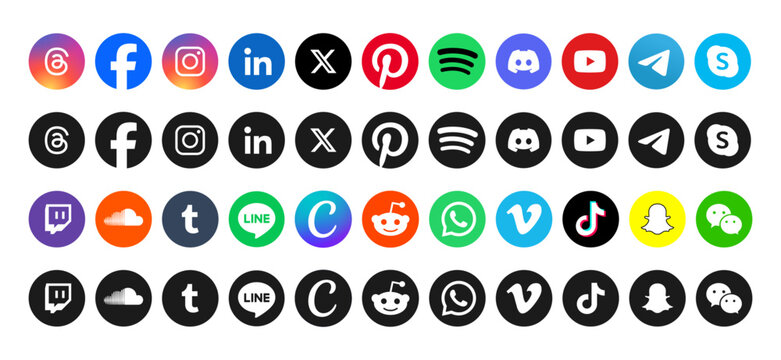

Banqueteo
Ejercicios básicos de hidratación en un punto geográfico y existencialismo regional.
Las redes sociales son fundamentales para el desarrollo empresarial actual, permitiendo a las empresas conectar con audiencias, promocionar productos y servicios, y construir relaciones con clientes. Aunque ofrecen grandes oportunidades, también presentan riesgos, como amenazas a la seguridad y la necesidad de gestionar eficazmente las crisis.
Por las noches un empresario afectado y un publicista procuran discutir sobre las redes sociales para analizar la su efecto en la afluencia de los negocios y en la ciudad en general.
Este documento es una recopilación de esos análisis.
Día 2
Agenda: Para caguamear cualquier banqueta es excelente sala.
-
Social media.
Ya de la chavez.
Las redes sociales son fundamentales para el desarrollo empresarial actual, permitiendo a las empresas conectar con audiencias, promocionar productos y servicios, y construir relaciones con clientes. Aunque ofrecen grandes oportunidades, también presentan riesgos, como amenazas a la seguridad y la necesidad de gestionar eficazmente las crisis.
-
Donde residen los beneficios
Es, su capacidad para conectar personas a nivel global, instantáneamente y sin barreras geográficas. Esto permite la comunicación, el intercambio de información y la creación de comunidades online. Además, las redes sociales facilitan el acceso a la información, el aprendizaje y la expresión personal.
-
MKT & Business
Puntos de venta.
- Ejemplos de cómo las redes sociales se utilizan para las ventas:
- Publicar contenido atractivo:
- Mostrar imágenes y videos de alta calidad, promocionar ofertas y descuentos, y compartir historias de éxito de clientes.
- Realizar campañas de publicidad:
- Utilizar la publicidad en redes sociales para llegar a audiencias específicas y generar conversiones.
- Utilizar herramientas de venta:
- Algunas plataformas de redes sociales ofrecen herramientas para facilitar el proceso de venta, como la posibilidad de agregar productos a la tienda en línea, realizar compras directamente desde la plataforma o utilizar chatbots para interactuar con los clientes.
- Crear una comunidad:
- Fomentar la interacción entre los usuarios, responder a preguntas y comentarios, y crear un sentido de pertenencia.
- Colaborar con influencers:
- Trabajar con personas influyentes en redes sociales para llegar a una audiencia más amplia y generar confianza en la marca.
-
Atención al cliente
Los clientes esperan que las marcas respondan a sus preguntas y preocupaciones a través de las redes sociales.
- Fidelización: La participación en redes sociales permite a las empresas construir relaciones más sólidas con sus clientes, lo que puede llevar a la fidelización.
- Aumento de ventas: Los clientes que se sienten valorados y escuchados en las redes sociales son más propensos a comprar productos o servicios de la marca.
- Visibilidad y conocimiento de la marca: La participación en redes sociales puede aumentar el alcance de la marca y hacer que sea más visible para un público más amplio.
- Retroalimentación: Las redes sociales proporcionan a las empresas una valiosa oportunidad de obtener retroalimentación de sus clientes, lo que puede ayudarles a mejorar sus productos y servicios.
- Interacción: Las redes sociales permiten a las empresas interactuar con sus clientes de manera más personal y directa, lo que puede generar confianza y lealtad.
- soporte, quejas, sugerencias, recompensas, monedero virtual, chatbots, ...
-
Gente
la participación de los clientes en las redes sociales es alta debido a la necesidad de atención al cliente, la oportunidad de construir relaciones, el potencial de aumentar las ventas, la mejora de la visibilidad y el conocimiento de la marca, la retroalimentación y la interacción más personal.
